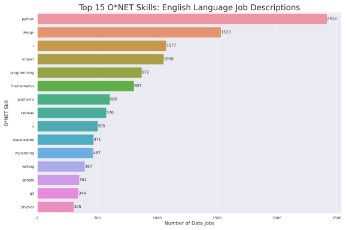
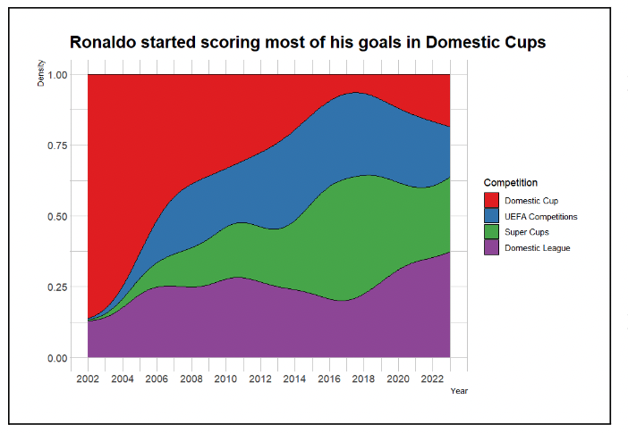
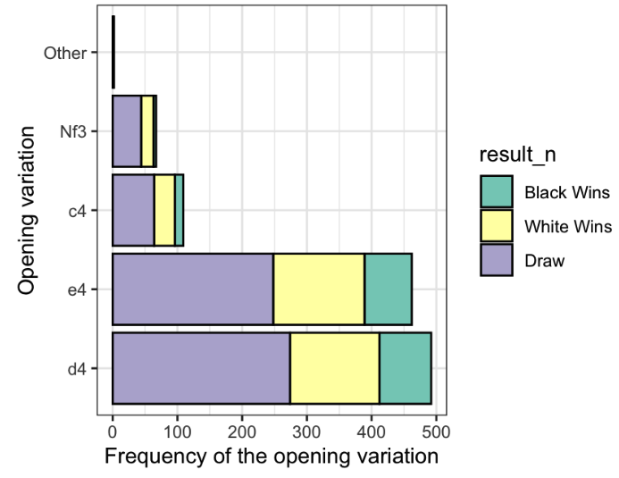
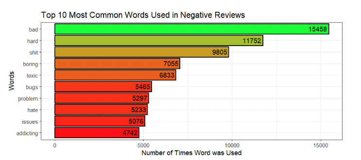
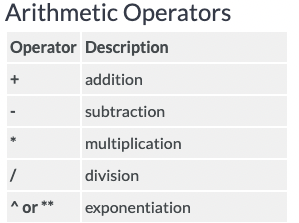
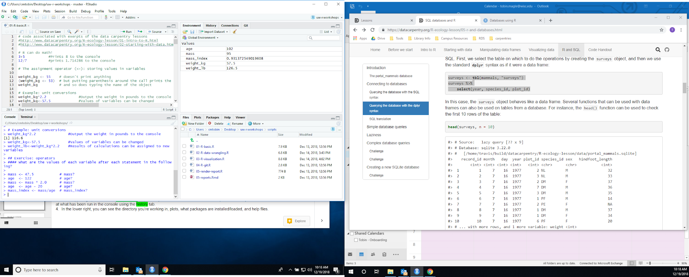

Lecture 1: Introduction to R (Preliminary Draft)
Course Overview
Econ 106 Data Analysis in Economics
- Fall 2024
- Based on: https://datacarpentry.org/R-ecology-lesson/introduction-r-rstudio.html
Outline
- Class Overview
- Intro to R:
- Rstudio Console
- Operators
- Functions
- Objects
Data is everywhere
- In 2015 the healthcare industry alone produced 1.2 billion clinical documents.
- The amount of text data generated annually (digital forms, social media, online portals, pdf reports, emails, text messages) is ever increasing.
Holmes, Dawn E., The data explosion, Big Data: A Very Short Introduction (Oxford, 2017). https://doi.org/10.1093/actrade/9780198779575.003.0001
https://wol.iza.org/articles/big-data-in-economics
Need a job? Learn how to work with data
- Data literacy is the ability of an individual to read, understand, and work with data to create meaningful insights
- Text analysis of job descriptions shows that data analysts emphasize the ability to interpret and communicate findings (insight, reporting).
r-bloggers.com article
Intended Audience
- Students who want to:
- serve as research assistants
- conduct empirical analyses
- are interested in Data Science careers.
- No prior programming experience is needed
Prerequisites: Econ 101 (Statistics)Course Objectives
- Master the ability to collect, process, interpret, analyze raw data using R.
- Develop visualization skills necessary to summarize data findings
- Communicate findings to various audiences and in various formats.
Why are we using R in this course?
- Advantages of R:
- It’s free and open source
- It’s widely used in industry
- It has a large and active user community
- More of a true programming language compared to Stata
R vs. Python
- R:
- Built for statistics and data analysis
- Better at econometrics and data visualization
- Python:
- Built for general-purpose programming and software development
- Better at machine learning

Why R
R is a means, not an end
- The goals of this course are platform-agnostic
- It’s not about the syntax of specific packages
- It’s about the concepts, logic, and thought processes underlying what we’re doing and why
- Your eventual goal: Use the right tool for the job
- You will likely learn all these tools at some point.
Grading
Lab Assignments
- Lab assignments: gives you the opportunity to practice the data skills covered during lecture
- Two components: writeup and R script
- Due on Sundays at 11:59pm
- I will drop the lowest lab score at the end of the quarter
Research Project
- The goal of this class is to give you the skills to conduct your own small research project.
- Three project milestones will walk you through the research process.
- Final product:
- Writeup (~1500 words)
- Documentation (R scripts)
- All three will count toward your final grade (no drops)
Examples of Student Work



ChatGPT/Generative AI
- It is up to you whether you want to use generative AI to help you with your code
- Guidelines:
- The code has to use the tools covered in lecture
- You cannot use it for the written portion of lab assignments or research milestones
- You need to state whether you used it for your code and how.
Poll Everywhere
- I use Poll Everywhere to encourage active learning during lecture
- My polls will be available here when they go live: PollEv.com/vsovero
Course Logistics
Poll Everywhere
- You will be redirected to the UCR SSO
- Please use your UCR email address to sign in (do not sign up for an account)

Lecture Quizzes (ungraded)
- Posted on Canvas for you to practice after lecture
- Does not count towards your grade
- Feel free to ask Fan to review these questions during lab section
Lecture Scripts
- I post all of the code used during lecture as an R script on Canvas
- Running the code during or after lecture will help you gain more familiarity with Rstudio
This Week: Introduction to R Basics
- Before we cover more broad topics in data analysis, we need to understand some R basics
- We need these building blocks before moving onto data wrangling, visualization, etc.
Coding Goals
- Run code that produces what you were expecting
- Run code that produces what you were expecting and you understand -Run code without errors (pretty doable with ChatGPT)
Coding in R
Getting help
- Read the error message.
- Try some online resources:
- Stack Overflow
- Slack
- Still stuck?
- Share your code, data, screenshots of the error message, etc. -ChatGPT (type in your code and the error message) -Please reach out to myself or your TA (Fan Bu)
Example: Be Careful with Typos
Implicit contract with the computer / scripting language:
Computer will do tedious computation for you.
In return, you will be completely precise in your instructions
Typos matter. Case matters.
data_rocks <- 2 ^ 3
datarocks
#> Error in eval(expr, envir, enclos): object ‘datarocks' not found
Data_rocks
#> Error in eval(expr, envir, enclos): object ‘Data_rocks' not foundWhat is R? RStudio?
- R – a programming language + software that interprets it
- RStudio – popular software to write R scripts and interact with the R software
- We will be using Rstudio in this course (however you need to install R in order for it to run correctly)
R Studio Interface
- Script
- Console
- Environment
- Files

RStudio Console
- You can input and execute commands directly in the console.
- Output of certain commands will be displayed in the console.
- Console

Rstudio Script Editor
- Most data analysis will require several steps
- The script editor is used to record the steps (commands) we take to analyze our data

Rstudio Script Editor
- Once you type them in the script, you still need to send them to the console to be run.
- WRITE
- RUN
- Ctrl-Enter
- Scripts are saved with the .R extension (“lecture1.R”)

Commenting in Scripts
- R ignores the rest of a line after a #
- write notes to yourself about what your code is doing
- comments are automatically in green

Let’s start coding!
- An operator is a symbol that tells R to perform some sort of operation.
- Types of Operators:
math (arithmetic)
logical (compare values)
assignment (saving values to objects)
extraction (take out/replace parts of objects)
Operators
- https://www.statmethods.net/management/operators.html
Arithmetic operators
- Does math:
- Add: 2 + 2
- Subtract: 3 - 1
- Multiply: 4 * 4
- Divide: 5 / 2
- Exponent: 5^2
- Ctrl/Cmd+Enter to run
- Results in the Console

Example: Who left a larger Tip?
- Louberto’s bill at Shake Shack came out to $25
- He tips 15%
- Louie’s bill at Shake Shack came out to $32
- He tips 12%
- Use operators to calculate how much Louie and Louberto tipped
Functions
- For more complicated tasks, R also comes pre-installed with a variety of functions.
- Functions are a sequence of instructions that perform a task:
Have names
Accept arguments (input)
Return a value (output)
RStudio Tour
Arguments
- Some arguments are required, some are optional.
- You can see that digits is optional because you don’t need to include it and you will get the same output
- To find out what arguments a function takes, look up its help file
Arguments
- However, it’s much easier to understand your code when you write out the name of the argument
- You technically don’t even need to write out the names of the arguments (x, digits) if values are in the correct order
Assignment operator
- Saves values into objects
- Overwrites previous values
- Can be combined with other operators
object <- value
weight_kg <- 55
weight_lb <- 2.2*weight_kg
<-
(alt/option - dash)Naming Objects
- Object names:
- cannot start with a digit
- cannot contain certain other characters such as a comma or a space.
- Tips:
- Make it as descriptive as possible
- Use underscores to mark spaces
- #this is good
- #not these
weight_kg <- 55
weightkg! <- 55
weight in kg <- 55
blah <- 55Where are my objects?
- You can also get a listing of these objects with commands:
You can see your objects in the workspace (top right pane of Rstudio)
ls()
objects()
Other
Checking Values of an Object
- If you want to inspect the values of an object, type the name of the object in the console
- weight_kg
weight_kg <- 55Example: Who left a larger Tip?
- Louberto’s bill at Shake Shack came out to $25
- He tips 15%
- Louie’s bill at Shake Shack came out to $32
- He tips 12%
- Use the assignment operator to save how much Louie and Louberto tipped (create 6 objects)
Removing Objects
- Sometimes when you have Rstudio open for a while, your workspace gets cluttered up with objects
- You can remove objects with commands (right) or by clicking the broom icon in Rstudio’s Environment pane
#remove object called y
rm(y)
#remove everything in your workspace
rm(list = ls())
Objects: Not Just for Storing Numbers
- Basic Data types:
- Character
- Numeric
````